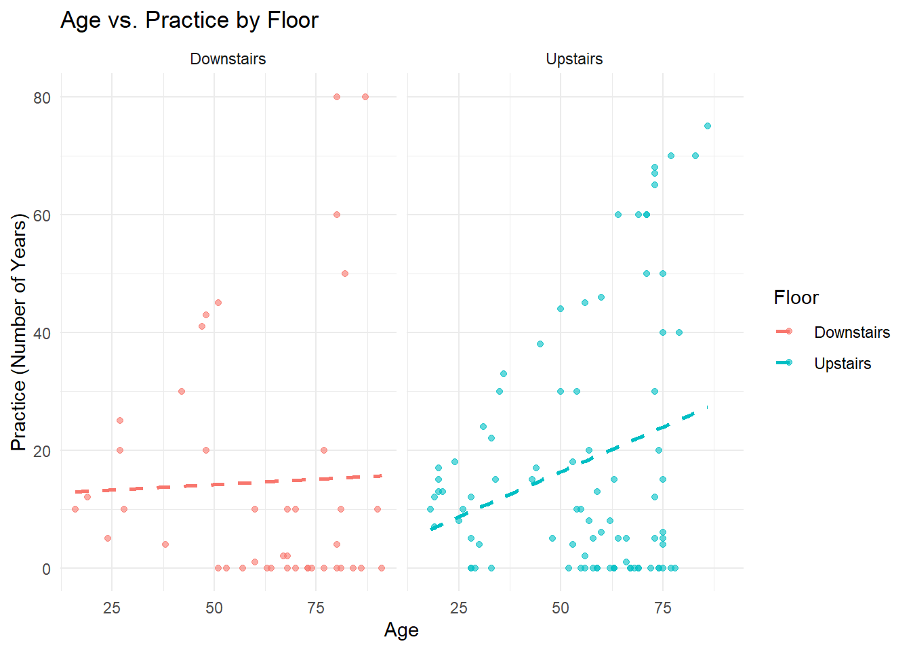

library(tidyverse)
library(MASS)
library(dplyr)
library(corrplot)
library(car)In this section, we’ll experiment with the step() function in R to help select ordinal regression models for our data.
step() is not compatible with clm(), which is why we’ll use polr().
The step() function starts with a full model containing all the possible main effects (in this case all the possible demographic variables). It tests different combinations of variables and then keeps the model with the lowest AIC.
This is helpful when we’re dealing with lots of different outcome variables and lots of demographic inputs and we need to figure out which ones to use.
Here’s how we’d run the step() function starting with all the demographic variables and using just fictional story as our outcome.
First some data loading, and demographic variable tidying.
data1 <- read_csv("https://raw.githubusercontent.com/hw3446/Final_Project_PUC/main/posts/Dataset_overview/working_data/data.csv")
data2 <- read_csv("https://raw.githubusercontent.com/hw3446/Final_Project_PUC/main/posts/Dataset_overview/working_data/data2.csv")outcome_vars <- c("Fictional_story", "Abstract_shapes", "Sensory_sensations",
"Life_experiences", "Media", "Music", "Future_plans",
"Building", "Everyday")
# Converting outcome variables to factors with consistent levels for each thought type
data1[outcome_vars] <- lapply(data1[outcome_vars], factor,
levels = c("Not at all", "A small amount of the time",
"A moderate amount of the time", "Most of the time",
"All of the time"))
data2[outcome_vars] <- lapply(data2[outcome_vars], factor,
levels = c("Not at all", "A small amount of the time",
"A moderate amount of the time", "Most of the time",
"All of the time"))
#Remaking the floor variable
data1 <- data1 %>%
mutate(Floor = ifelse(Location %in% c("A", "B", "C", "D", "E", "F"), "Downstairs", "Upstairs")) %>% relocate(Floor, .after = Location)
data2 <- data2 %>%
mutate(Floor = ifelse(Location %in% c("A", "B", "C", "D", "E", "F"), "Downstairs", "Upstairs")) %>% relocate(Floor, .after = Location)
#Making sure demographic variables are classed in the right way.
data1$Age <- as.numeric(data1$Age)
data2$Age <- as.numeric(data2$Age)
data1$Practice <- as.numeric(as.character(data1$Practice))
data2$Practice <- as.numeric(as.character(data2$Practice))
data1$Gender <- factor(data1$Gender, levels = c('Male', 'Female', 'Other'))
data2$Gender <- factor(data2$Gender, levels = c('Male', 'Female', 'Other'))
data1$Music_listening <- factor(data1$Music_listening, levels = c('Very rarely', 'Somewhat rarely', 'Moderately frequently', 'Frequently', 'Very frequently'))
data2$Music_listening <- factor(data2$Music_listening, levels = c('Very rarely', 'Somewhat rarely', 'Moderately frequently', 'Frequently', 'Very frequently'))
data1$Floor <- factor(data1$Floor, levels = c('Downstairs', 'Upstairs'))
data2$Floor <- factor(data2$Floor, levels = c('Downstairs', 'Upstairs'))We have some NAs in our dataframe, so before running the models, we need to figure out what to do with these.
Let’s get a map of our missing data:
library(Amelia)
demographics_outcomes <- c('Age', 'Gender', 'Music_listening', 'Practice', 'Floor', "Fictional_story", "Abstract_shapes", "Sensory_sensations",
"Life_experiences", "Media", "Music", "Future_plans",
"Building", "Everyday")
dem_out <- dplyr::select(data1, all_of(demographics_outcomes))
missmap(dem_out)
We can hypothesise that the data is MCAR (missing completely at random), i.e. that missing values aren’t correlated with any particular variables. Let’s test this.
library(naniar)
mcar_test(dem_out)# A tibble: 1 × 4
statistic df p.value missing.patterns
<dbl> <dbl> <dbl> <int>
1 250. 237 0.265 23p > 0.05, so there is insufficient evidence to reject the null hypothesis that the data is MCAR.
Based on this, we can use imputation to deal with the NAs.
library(mice)
imputed_data1 <- mice(data1, m = 5, method = 'pmm', seed = 123, print = FALSE)
completed_data1 <- complete(imputed_data1, 1)Let’s now run the step() function with our imputed data for fictional story.
- Start by specifying the model with with maximum number of demographic inputs.
model_fiction_imp <- polr(Fictional_story ~ Age + Gender + Music_listening + Practice + Floor,
data = completed_data1, Hess = TRUE, method = "probit")
stepwise_model_imp <- step(model_fiction_imp)Start: AIC=488.65
Fictional_story ~ Age + Gender + Music_listening + Practice +
Floor
Df AIC
- Gender 2 485.33
- Practice 1 486.68
- Floor 1 486.78
- Music_listening 4 487.64
<none> 488.65
- Age 1 493.74
Step: AIC=485.33
Fictional_story ~ Age + Music_listening + Practice + Floor
Df AIC
- Practice 1 483.33
- Floor 1 483.54
- Music_listening 4 484.98
<none> 485.33
- Age 1 491.03
Step: AIC=483.33
Fictional_story ~ Age + Music_listening + Floor
Df AIC
- Floor 1 481.56
- Music_listening 4 483.20
<none> 483.33
- Age 1 489.20
Step: AIC=481.56
Fictional_story ~ Age + Music_listening
Df AIC
- Music_listening 4 481.22
<none> 481.56
- Age 1 487.20
Step: AIC=481.22
Fictional_story ~ Age
Df AIC
<none> 481.22
- Age 1 485.74summary(stepwise_model_imp)Call:
polr(formula = Fictional_story ~ Age, data = completed_data1,
Hess = TRUE, method = "probit")
Coefficients:
Value Std. Error t value
Age -0.01087 0.004265 -2.549
Intercepts:
Value Std. Error
Not at all|A small amount of the time -0.8932 0.2658
A small amount of the time|A moderate amount of the time -0.2880 0.2593
A moderate amount of the time|Most of the time 0.2708 0.2634
Most of the time|All of the time 1.2830 0.3059
t value
Not at all|A small amount of the time -3.3605
A small amount of the time|A moderate amount of the time -1.1109
A moderate amount of the time|Most of the time 1.0279
Most of the time|All of the time 4.1937
Residual Deviance: 471.2221
AIC: 481.2221 step() ran through all the possible demographics to find the model with the lowest AIC. In this case the most successful model was one with just age as a demographic input.
We can run the step() function looping through all the possible outcome variables using the imputed data.
# List to store results
models <- list()
stepwise_models <- list()
# Loop through selected outcomes
for (outcome in outcome_vars) {
formula <- as.formula(paste(outcome, "~ Age + Gender + Music_listening + Practice + Floor"))
tryCatch({
# Fit proportional odds model
model <- polr(formula, data = completed_data1, Hess = TRUE, method = "probit",
control = list(maxit = 1000), na.action = na.exclude)
# Store model
models[[outcome]] <- model
# Print summary
cat("\nSummary for", outcome, ":\n")
print(summary(model))
# Perform stepwise regression
step_model <- step(model, direction = "backward", trace = FALSE)
stepwise_models[[outcome]] <- step_model
# Print stepwise summary
cat("\nStepwise Model Summary for", outcome, ":\n")
print(summary(step_model))
}, error = function(e) {
cat("\nSkipping", outcome, "due to error:", conditionMessage(e), "\n")
})
}
Summary for Fictional_story :
Call:
polr(formula = formula, data = completed_data1, control = list(maxit = 1000),
na.action = na.exclude, Hess = TRUE, method = "probit")
Coefficients:
Value Std. Error t value
Age -0.0119694 0.004507 -2.6559
GenderFemale -0.1304844 0.171772 -0.7596
GenderOther 0.2866160 1.142658 0.2508
Music_listeningSomewhat rarely 0.3869493 0.818075 0.4730
Music_listeningModerately frequently 0.1100234 0.760115 0.1447
Music_listeningFrequently -0.3969950 0.747131 -0.5314
Music_listeningVery frequently -0.2231091 0.745208 -0.2994
Practice -0.0006767 0.004035 -0.1677
FloorUpstairs -0.0696105 0.189520 -0.3673
Intercepts:
Value Std. Error
Not at all|A small amount of the time -1.2489 0.7788
A small amount of the time|A moderate amount of the time -0.6293 0.7734
A moderate amount of the time|Most of the time -0.0534 0.7759
Most of the time|All of the time 1.0040 0.7985
t value
Not at all|A small amount of the time -1.6036
A small amount of the time|A moderate amount of the time -0.8137
A moderate amount of the time|Most of the time -0.0688
Most of the time|All of the time 1.2573
Residual Deviance: 462.6495
AIC: 488.6495
Stepwise Model Summary for Fictional_story :
Call:
polr(formula = Fictional_story ~ Age, data = completed_data1,
control = list(maxit = 1000), na.action = na.exclude, Hess = TRUE,
method = "probit")
Coefficients:
Value Std. Error t value
Age -0.01087 0.004265 -2.549
Intercepts:
Value Std. Error
Not at all|A small amount of the time -0.8932 0.2658
A small amount of the time|A moderate amount of the time -0.2880 0.2593
A moderate amount of the time|Most of the time 0.2708 0.2634
Most of the time|All of the time 1.2830 0.3059
t value
Not at all|A small amount of the time -3.3605
A small amount of the time|A moderate amount of the time -1.1109
A moderate amount of the time|Most of the time 1.0279
Most of the time|All of the time 4.1937
Residual Deviance: 471.2221
AIC: 481.2221
Summary for Abstract_shapes :
Call:
polr(formula = formula, data = completed_data1, control = list(maxit = 1000),
na.action = na.exclude, Hess = TRUE, method = "probit")
Coefficients:
Value Std. Error t value
Age -0.007717 0.004651 -1.65937
GenderFemale 0.139259 0.181091 0.76900
GenderOther 0.404613 1.124977 0.35966
Music_listeningSomewhat rarely -0.232743 0.895790 -0.25982
Music_listeningModerately frequently -0.061782 0.833906 -0.07409
Music_listeningFrequently -0.080580 0.820245 -0.09824
Music_listeningVery frequently 0.028789 0.817584 0.03521
Practice 0.002845 0.004105 0.69306
FloorUpstairs -0.062090 0.196443 -0.31607
Intercepts:
Value Std. Error
Not at all|A small amount of the time -0.2575 0.8396
A small amount of the time|A moderate amount of the time 0.4112 0.8386
A moderate amount of the time|Most of the time 1.1371 0.8439
Most of the time|All of the time 2.1552 0.9067
t value
Not at all|A small amount of the time -0.3067
A small amount of the time|A moderate amount of the time 0.4904
A moderate amount of the time|Most of the time 1.3474
Most of the time|All of the time 2.3769
Residual Deviance: 382.2277
AIC: 408.2277
Stepwise Model Summary for Abstract_shapes :
Call:
polr(formula = Abstract_shapes ~ Age, data = completed_data1,
control = list(maxit = 1000), na.action = na.exclude, Hess = TRUE,
method = "probit")
Coefficients:
Value Std. Error t value
Age -0.007516 0.004429 -1.697
Intercepts:
Value Std. Error
Not at all|A small amount of the time -0.2910 0.2718
A small amount of the time|A moderate amount of the time 0.3716 0.2720
A moderate amount of the time|Most of the time 1.0905 0.2899
Most of the time|All of the time 2.1051 0.4312
t value
Not at all|A small amount of the time -1.0705
A small amount of the time|A moderate amount of the time 1.3665
A moderate amount of the time|Most of the time 3.7619
Most of the time|All of the time 4.8814
Residual Deviance: 384.1321
AIC: 394.1321
Summary for Sensory_sensations :
Call:
polr(formula = formula, data = completed_data1, control = list(maxit = 1000),
na.action = na.exclude, Hess = TRUE, method = "probit")
Coefficients:
Value Std. Error t value
Age 0.001477 0.005143 0.2872
GenderFemale 0.097504 0.193062 0.5050
GenderOther 0.989921 1.146929 0.8631
Music_listeningSomewhat rarely 3.475040 0.333934 10.4064
Music_listeningModerately frequently 3.440302 0.209330 16.4348
Music_listeningFrequently 3.595043 0.174398 20.6141
Music_listeningVery frequently 3.525095 0.167035 21.1039
Practice -0.003816 0.004481 -0.8517
FloorUpstairs 0.056182 0.211594 0.2655
Intercepts:
Value Std. Error
Not at all|A small amount of the time 4.0713 0.3210
A small amount of the time|A moderate amount of the time 4.8295 0.3339
A moderate amount of the time|Most of the time 5.4624 0.3668
Most of the time|All of the time 9.6701 0.3668
t value
Not at all|A small amount of the time 12.6818
A small amount of the time|A moderate amount of the time 14.4651
A moderate amount of the time|Most of the time 14.8929
Most of the time|All of the time 26.3651
Residual Deviance: 308.6269
AIC: 334.6269
Stepwise Model Summary for Sensory_sensations :
Call:
polr(formula = Sensory_sensations ~ 1, data = completed_data1,
control = list(maxit = 1000), na.action = na.exclude, Hess = TRUE,
method = "probit")
No coefficients
Intercepts:
Value Std. Error
Not at all|A small amount of the time 0.4361 0.0998
A small amount of the time|A moderate amount of the time 1.1833 0.1254
A moderate amount of the time|Most of the time 1.8055 0.1821
Most of the time|All of the time 5.2824 58.3345
t value
Not at all|A small amount of the time 4.3695
A small amount of the time|A moderate amount of the time 9.4335
A moderate amount of the time|Most of the time 9.9160
Most of the time|All of the time 0.0906
Residual Deviance: 312.1081
AIC: 320.1081
Summary for Life_experiences :
Call:
polr(formula = formula, data = completed_data1, control = list(maxit = 1000),
na.action = na.exclude, Hess = TRUE, method = "probit")
Coefficients:
Value Std. Error t value
Age -0.0185912 0.004496 -4.13501
GenderFemale 0.3338443 0.168246 1.98426
GenderOther 0.0435836 1.130373 0.03856
Music_listeningSomewhat rarely -0.8386026 0.838070 -1.00064
Music_listeningModerately frequently -0.5336945 0.783171 -0.68145
Music_listeningFrequently -0.8846652 0.771458 -1.14674
Music_listeningVery frequently -0.7085922 0.768244 -0.92235
Practice 0.0003421 0.003938 0.08688
FloorUpstairs 0.0887653 0.184924 0.48001
Intercepts:
Value Std. Error
Not at all|A small amount of the time -2.3465 0.8069
A small amount of the time|A moderate amount of the time -1.5697 0.8002
A moderate amount of the time|Most of the time -0.6085 0.7931
Most of the time|All of the time 0.6236 0.8114
t value
Not at all|A small amount of the time -2.9080
A small amount of the time|A moderate amount of the time -1.9615
A moderate amount of the time|Most of the time -0.7673
Most of the time|All of the time 0.7685
Residual Deviance: 461.8797
AIC: 487.8797
Stepwise Model Summary for Life_experiences :
Call:
polr(formula = Life_experiences ~ Age + Gender, data = completed_data1,
control = list(maxit = 1000), na.action = na.exclude, Hess = TRUE,
method = "probit")
Coefficients:
Value Std. Error t value
Age -0.01837 0.004339 -4.2348
GenderFemale 0.35029 0.166603 2.1025
GenderOther -0.12500 1.061700 -0.1177
Intercepts:
Value Std. Error
Not at all|A small amount of the time -1.6660 0.2969
A small amount of the time|A moderate amount of the time -0.8944 0.2869
A moderate amount of the time|Most of the time 0.0565 0.2810
Most of the time|All of the time 1.2609 0.3245
t value
Not at all|A small amount of the time -5.6112
A small amount of the time|A moderate amount of the time -3.1173
A moderate amount of the time|Most of the time 0.2009
Most of the time|All of the time 3.8851
Residual Deviance: 465.5019
AIC: 479.5019
Summary for Media :
Call:
polr(formula = formula, data = completed_data1, control = list(maxit = 1000),
na.action = na.exclude, Hess = TRUE, method = "probit")
Coefficients:
Value Std. Error t value
Age -0.010872 0.004946 -2.19822
GenderFemale -0.101713 0.190530 -0.53384
GenderOther 0.247960 1.133610 0.21873
Music_listeningSomewhat rarely 0.667168 0.899813 0.74145
Music_listeningModerately frequently -0.078588 0.850081 -0.09245
Music_listeningFrequently -0.083448 0.835649 -0.09986
Music_listeningVery frequently 0.039282 0.830912 0.04728
Practice -0.002154 0.004500 -0.47868
FloorUpstairs 0.114767 0.217220 0.52834
Intercepts:
Value Std. Error
Not at all|A small amount of the time -0.2502 0.8738
A small amount of the time|A moderate amount of the time 0.3088 0.8743
A moderate amount of the time|Most of the time 1.1306 0.8850
Most of the time|All of the time 6.2508 0.8850
t value
Not at all|A small amount of the time -0.2863
A small amount of the time|A moderate amount of the time 0.3532
A moderate amount of the time|Most of the time 1.2775
Most of the time|All of the time 7.0632
Residual Deviance: 329.2396
AIC: 355.2396
Stepwise Model Summary for Media :
Call:
polr(formula = Media ~ Age, data = completed_data1, control = list(maxit = 1000),
na.action = na.exclude, Hess = TRUE, method = "probit")
Coefficients:
Value Std. Error t value
Age -0.01192 0.004678 -2.549
Intercepts:
Value Std. Error
Not at all|A small amount of the time -0.3201 0.2811
A small amount of the time|A moderate amount of the time 0.2227 0.2797
A moderate amount of the time|Most of the time 1.0178 0.3035
Most of the time|All of the time 4.0381 14.8246
t value
Not at all|A small amount of the time -1.1387
A small amount of the time|A moderate amount of the time 0.7964
A moderate amount of the time|Most of the time 3.3541
Most of the time|All of the time 0.2724
Residual Deviance: 334.9296
AIC: 344.9296
Summary for Music :
Call:
polr(formula = formula, data = completed_data1, control = list(maxit = 1000),
na.action = na.exclude, Hess = TRUE, method = "probit")
Coefficients:
Value Std. Error t value
Age -0.004825 0.004461 -1.0817
GenderFemale 0.252545 0.169562 1.4894
GenderOther 0.129646 1.163197 0.1115
Music_listeningSomewhat rarely 1.678389 0.829738 2.0228
Music_listeningModerately frequently 1.323757 0.769981 1.7192
Music_listeningFrequently 1.412387 0.759212 1.8603
Music_listeningVery frequently 2.019221 0.761680 2.6510
Practice 0.010954 0.004055 2.7015
FloorUpstairs -0.052933 0.187118 -0.2829
Intercepts:
Value Std. Error
Not at all|A small amount of the time -0.3323 0.7888
A small amount of the time|A moderate amount of the time 0.3538 0.7789
A moderate amount of the time|Most of the time 1.1955 0.7861
Most of the time|All of the time 2.4851 0.7969
t value
Not at all|A small amount of the time -0.4213
A small amount of the time|A moderate amount of the time 0.4543
A moderate amount of the time|Most of the time 1.5209
Most of the time|All of the time 3.1182
Residual Deviance: 430.3254
AIC: 456.3254
Stepwise Model Summary for Music :
Call:
polr(formula = Music ~ Music_listening + Practice, data = completed_data1,
control = list(maxit = 1000), na.action = na.exclude, Hess = TRUE,
method = "probit")
Coefficients:
Value Std. Error t value
Music_listeningSomewhat rarely 1.582661 0.81114 1.951
Music_listeningModerately frequently 1.199592 0.75908 1.580
Music_listeningFrequently 1.297897 0.75320 1.723
Music_listeningVery frequently 1.915436 0.75248 2.545
Practice 0.009943 0.00397 2.504
Intercepts:
Value Std. Error
Not at all|A small amount of the time -0.2466 0.7563
A small amount of the time|A moderate amount of the time 0.4116 0.7469
A moderate amount of the time|Most of the time 1.2443 0.7539
Most of the time|All of the time 2.5247 0.7651
t value
Not at all|A small amount of the time -0.3261
A small amount of the time|A moderate amount of the time 0.5511
A moderate amount of the time|Most of the time 1.6505
Most of the time|All of the time 3.3000
Residual Deviance: 433.7725
AIC: 451.7725
Summary for Future_plans :
Call:
polr(formula = formula, data = completed_data1, control = list(maxit = 1000),
na.action = na.exclude, Hess = TRUE, method = "probit")
Coefficients:
Value Std. Error t value
Age -0.0297459 0.004786 -6.2148
GenderFemale -0.1171670 0.173718 -0.6745
GenderOther -0.9751986 1.129557 -0.8633
Music_listeningSomewhat rarely 0.1019078 0.831239 0.1226
Music_listeningModerately frequently -0.1386299 0.773797 -0.1792
Music_listeningFrequently -0.5641257 0.760582 -0.7417
Music_listeningVery frequently -0.4006497 0.759090 -0.5278
Practice 0.0004275 0.004183 0.1022
FloorUpstairs -0.0828124 0.192812 -0.4295
Intercepts:
Value Std. Error
Not at all|A small amount of the time -2.5309 0.8043
A small amount of the time|A moderate amount of the time -1.7781 0.7948
A moderate amount of the time|Most of the time -0.9118 0.7877
Most of the time|All of the time 0.0447 0.8069
t value
Not at all|A small amount of the time -3.1466
A small amount of the time|A moderate amount of the time -2.2372
A moderate amount of the time|Most of the time -1.1576
Most of the time|All of the time 0.0554
Residual Deviance: 425.868
AIC: 451.868
Stepwise Model Summary for Future_plans :
Call:
polr(formula = Future_plans ~ Age, data = completed_data1, control = list(maxit = 1000),
na.action = na.exclude, Hess = TRUE, method = "probit")
Coefficients:
Value Std. Error t value
Age -0.0279 0.00454 -6.146
Intercepts:
Value Std. Error
Not at all|A small amount of the time -1.9467 0.2897
A small amount of the time|A moderate amount of the time -1.2071 0.2763
A moderate amount of the time|Most of the time -0.3564 0.2669
Most of the time|All of the time 0.5703 0.2977
t value
Not at all|A small amount of the time -6.7195
A small amount of the time|A moderate amount of the time -4.3689
A moderate amount of the time|Most of the time -1.3353
Most of the time|All of the time 1.9154
Residual Deviance: 431.3382
AIC: 441.3382
Summary for Building :
Call:
polr(formula = formula, data = completed_data1, control = list(maxit = 1000),
na.action = na.exclude, Hess = TRUE, method = "probit")
Coefficients:
Value Std. Error t value
Age -0.014909 4.707e-03 -3.167e+00
GenderFemale -0.325161 1.791e-01 -1.816e+00
GenderOther -4.624617 5.802e-06 -7.970e+05
Music_listeningSomewhat rarely 3.395080 3.271e-01 1.038e+01
Music_listeningModerately frequently 3.770237 1.930e-01 1.954e+01
Music_listeningFrequently 3.978579 1.664e-01 2.390e+01
Music_listeningVery frequently 4.127860 1.606e-01 2.571e+01
Practice -0.001467 4.216e-03 -3.479e-01
FloorUpstairs 0.331029 2.039e-01 1.623e+00
Intercepts:
Value
Not at all|A small amount of the time 3.0040
A small amount of the time|A moderate amount of the time 4.1311
A moderate amount of the time|Most of the time 5.0114
Most of the time|All of the time 5.5848
Std. Error
Not at all|A small amount of the time 0.2968
A small amount of the time|A moderate amount of the time 0.2997
A moderate amount of the time|Most of the time 0.3223
Most of the time|All of the time 0.3841
t value
Not at all|A small amount of the time 10.1222
A small amount of the time|A moderate amount of the time 13.7831
A moderate amount of the time|Most of the time 15.5503
Most of the time|All of the time 14.5407
Residual Deviance: 359.3626
AIC: 385.3626
Stepwise Model Summary for Building :
Call:
polr(formula = Building ~ Age + Gender + Music_listening + Floor,
data = completed_data1, control = list(maxit = 1000), na.action = na.exclude,
Hess = TRUE, method = "probit")
Coefficients:
Value Std. Error t value
Age -0.01506 0.0046870 -3.213e+00
GenderFemale -0.32002 0.1784391 -1.793e+00
GenderOther -4.41799 0.0000141 -3.133e+05
Music_listeningSomewhat rarely 3.48454 0.3274930 1.064e+01
Music_listeningModerately frequently 3.86134 0.1926620 2.004e+01
Music_listeningFrequently 4.05756 0.1647944 2.462e+01
Music_listeningVery frequently 4.20895 0.1596560 2.636e+01
FloorUpstairs 0.32172 0.2020685 1.592e+00
Intercepts:
Value
Not at all|A small amount of the time 3.0991
A small amount of the time|A moderate amount of the time 4.2254
A moderate amount of the time|Most of the time 5.1035
Most of the time|All of the time 5.6774
Std. Error
Not at all|A small amount of the time 0.2959
A small amount of the time|A moderate amount of the time 0.2990
A moderate amount of the time|Most of the time 0.3218
Most of the time|All of the time 0.3839
t value
Not at all|A small amount of the time 10.4747
A small amount of the time|A moderate amount of the time 14.1310
A moderate amount of the time|Most of the time 15.8587
Most of the time|All of the time 14.7871
Residual Deviance: 359.4838
AIC: 383.4838
Summary for Everyday :
Call:
polr(formula = formula, data = completed_data1, control = list(maxit = 1000),
na.action = na.exclude, Hess = TRUE, method = "probit")
Coefficients:
Value Std. Error t value
Age -0.016147 0.004533 -3.56225
GenderFemale 0.044141 0.171463 0.25744
GenderOther 0.039425 1.156164 0.03410
Music_listeningSomewhat rarely -0.629524 0.855960 -0.73546
Music_listeningModerately frequently 0.117966 0.785209 0.15024
Music_listeningFrequently -0.158050 0.773739 -0.20427
Music_listeningVery frequently 0.083396 0.771575 0.10809
Practice -0.005048 0.004110 -1.22843
FloorUpstairs -0.015218 0.189961 -0.08011
Intercepts:
Value Std. Error
Not at all|A small amount of the time -1.4546 0.8036
A small amount of the time|A moderate amount of the time -0.3433 0.7996
A moderate amount of the time|Most of the time 0.4885 0.8054
Most of the time|All of the time 1.1002 0.8209
t value
Not at all|A small amount of the time -1.8101
A small amount of the time|A moderate amount of the time -0.4294
A moderate amount of the time|Most of the time 0.6065
Most of the time|All of the time 1.3402
Residual Deviance: 416.4516
AIC: 442.4516
Stepwise Model Summary for Everyday :
Call:
polr(formula = Everyday ~ Age, data = completed_data1, control = list(maxit = 1000),
na.action = na.exclude, Hess = TRUE, method = "probit")
Coefficients:
Value Std. Error t value
Age -0.01527 0.004303 -3.549
Intercepts:
Value Std. Error
Not at all|A small amount of the time -1.3073 0.2741
A small amount of the time|A moderate amount of the time -0.2215 0.2642
A moderate amount of the time|Most of the time 0.6075 0.2718
Most of the time|All of the time 1.2102 0.3072
t value
Not at all|A small amount of the time -4.7696
A small amount of the time|A moderate amount of the time -0.8384
A moderate amount of the time|Most of the time 2.2351
Most of the time|All of the time 3.9400
Residual Deviance: 423.2318
AIC: 433.2318 From the above, we can see that the models with the lowest AIC (using just main effects) are as follows:
Fictional story: polr(formula = Fictional_story ~ Age, data = completed_data1, control = list(maxit = 1000), na.action = na.exclude, Hess = TRUE, method = “probit”)
Abstract shapes: polr(formula = Abstract_shapes ~ Age, data = completed_data1, control = list(maxit = 1000), na.action = na.exclude, Hess = TRUE, method = “probit”)
Sensory sensations: polr(formula = Sensory_sensations ~ 1, data = completed_data1, control = list(maxit = 1000), na.action = na.exclude, Hess = TRUE, method = “probit”)
Life experiences: polr(formula = Life_experiences ~ Age + Gender, data = completed_data1, control = list(maxit = 1000), na.action = na.exclude, Hess = TRUE, method = “probit”)
Media: polr(formula = Media ~ Age, data = completed_data1, control = list(maxit = 1000), na.action = na.exclude, Hess = TRUE, method = “probit”)
Music: polr(formula = Music ~ Music_listening + Practice, data = completed_data1, control = list(maxit = 1000), na.action = na.exclude, Hess = TRUE, method = “probit”)
Future plans: polr(formula = Future_plans ~ Age, data = completed_data1, control = list(maxit = 1000), na.action = na.exclude, Hess = TRUE, method = “probit”)
Building: polr(formula = Building ~ Age + Gender + Music_listening + Floor, data = completed_data1, control = list(maxit = 1000), na.action = na.exclude, Hess = TRUE, method = “probit”)
Everyday: polr(formula = Everyday ~ Age, data = completed_data1, control = list(maxit = 1000), na.action = na.exclude, Hess = TRUE, method = “probit”)
Let’s also look at the interactions between the demographic variables and check for multicollinearity.
library(conflicted)
conflict_prefer("filter", "dplyr")
demographics <- c('Age', 'Gender', 'Music_listening', 'Practice', 'Floor')
demographics_data <- dplyr::select(data1, all_of(demographics))
# Convert categorical variables to numeric
demographics_numeric <- demographics_data %>%
mutate(
Gender = as.numeric(factor(Gender)),
Music_listening = as.numeric(factor(Music_listening, ordered = TRUE)),
Floor = as.numeric(factor(Floor))
)
# Compute correlation matrix
cor_matrix <- cor(demographics_numeric, use = "pairwise.complete.obs")
# Plot heatmap
corrplot(cor_matrix, method = "color", type = "lower",
tl.col = "black", tl.srt = 45, addCoef.col = "white",
col = colorRampPalette(c("blue", "white", "red"))(200))
#Here's another way of visualising the interactions
ggplot(data1, aes(x = Age, y = Practice, color = Floor)) +
geom_point(alpha = 0.6) +
geom_smooth(method = "lm", se = FALSE, linetype = "dashed") +
facet_wrap(~ Floor) +
labs(title = "Age vs. Practice by Floor",
x = "Age",
y = "Practice (Number of Years)") +
theme_minimal()
#Checking for collinearity
model1 <- lm(Age ~ Practice + Gender + Music_listening + Floor, data = demographics_numeric)
model2 <- lm(Gender ~ Age + Practice + Music_listening + Floor, data = demographics_numeric)
model3 <- lm(Practice ~ Age + Gender + Music_listening + Floor, data = demographics_numeric)
model4 <- lm(Music_listening ~ Age + Gender + Practice + Floor, data = demographics_numeric)
model5 <- lm(Floor ~ Age + Gender + Practice + Music_listening, data = demographics_numeric)
vif(model1) Practice Gender Music_listening Floor
1.036377 1.002153 1.034110 1.003875 vif(model2) Age Practice Music_listening Floor
1.086216 1.067477 1.034662 1.059068 vif(model3) Age Gender Music_listening Floor
1.064866 1.011938 1.004652 1.051720 vif(model4) Age Gender Practice Floor
1.096117 1.011828 1.036402 1.058475 vif(model5) Age Gender Practice Music_listening
1.039690 1.011967 1.060100 1.034224 All vif() outputs are close to 1, indicating that multicollinearity shouldn’t be a problem.
In the post on ‘Ordinal regression: final models’, we’ll use these step() results to run some final model visualisations.